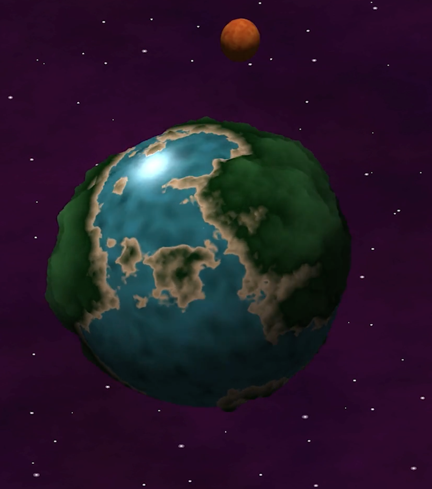
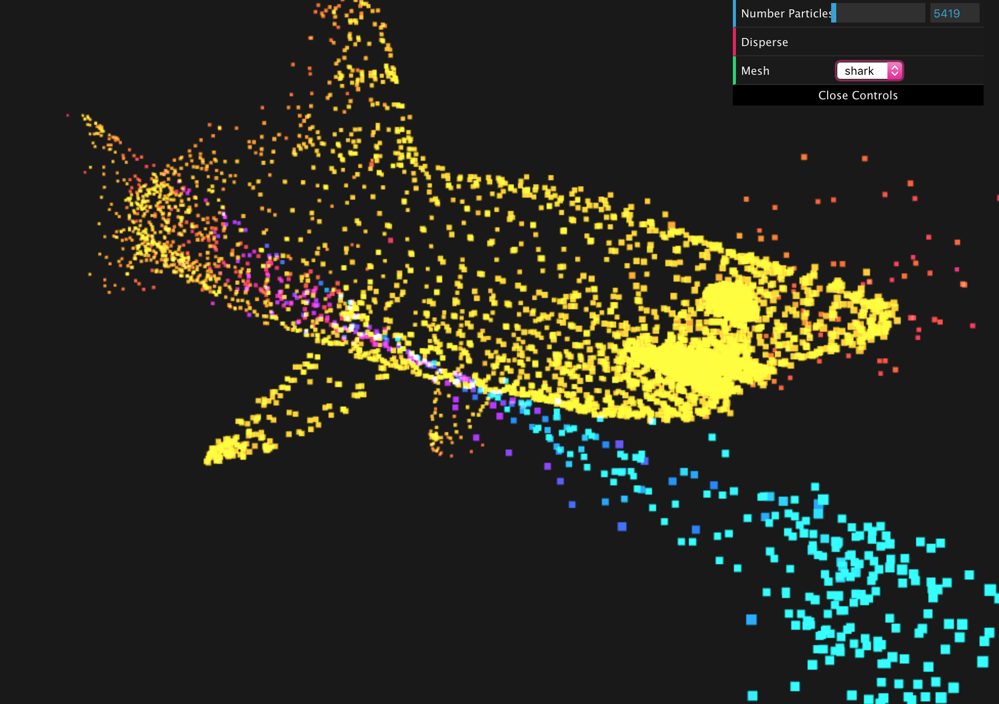

Selected Projects
Monte Carlo Path Tracer: C++ (Spring 2018)
Multi-month implementation of Monte Carlo Path Tracer, including various integration methods such as direct lighting and global illumination with multiple importance sampling. Culminated in photon mapper using k-d tree. Implemented additional features including thin lens camera, ray marching of implicit surfaces, various light sources (area light, point light, and spotlight) and materials.


{kind=link}
Select assignments from a Spring 2018 procedural graphics course, using TypeScript and WebGL
L-System Cactus
Assignment to design an L-system. The user can control the number of iterations (string expansions), the rotation of the plant (how much each paddle rotates), the scale of the paddles, and the color of the flowers. Once given a seed string ('0'), the string is expanded a number of times (based on the number of iterations). It then figures out which drawing functions to call, and calls them using the Turtle (drawing functions belong to the Turtle, who keeps track of position, orientation, etc).

Noisy Planet
Assignment to experiment with various noise functions. The planet terrain color and height was generated using 3D fractal Brownian motion (FBM). The water color was created with recursive Perlin noise, animated to look like waves. The moon was textured with summed 3D Perlin noise and 3D Worley noise to create illusion of craters. The background color was created with 3D FBM, with star placement controlled by 3D Worley noise.
Realtime Ray Marching of Implicit Surfaces
Animated scene made entirely in shader. Features realtime ray marching of implicit surfaces using signed distance functions.

Interactive Particle System
The particles' movement is controlled by Euler integration. Their initial position and velocity are randomized; they also have randomized masses. I took a lot of inspiration for their physics from springs and Hooke's Law; for example, I make use of a dampening constant and a k value (from F = kx). The particles are colored based on their distance to the origin, or a target point if there is one. The user can left click to attract particles and right click to repel them. The user can select from several meshes to attract the particles to. If you wish to disperse the particles, you can click disperse which assigns each particle a random velocity. You can also edit the number of particles in the scene.
Mini Minecraft: C++, OpenGL (Fall 2017)
Three-person project to develop Minecraft-like game. Implemented procedurally generated terrain with 2D fractal Brownian motion, raymarching and ray-cube intersections for interaction with environment, A* algorithm to determine movement of non-player character, distance fog, and multithreading in terrain generation.